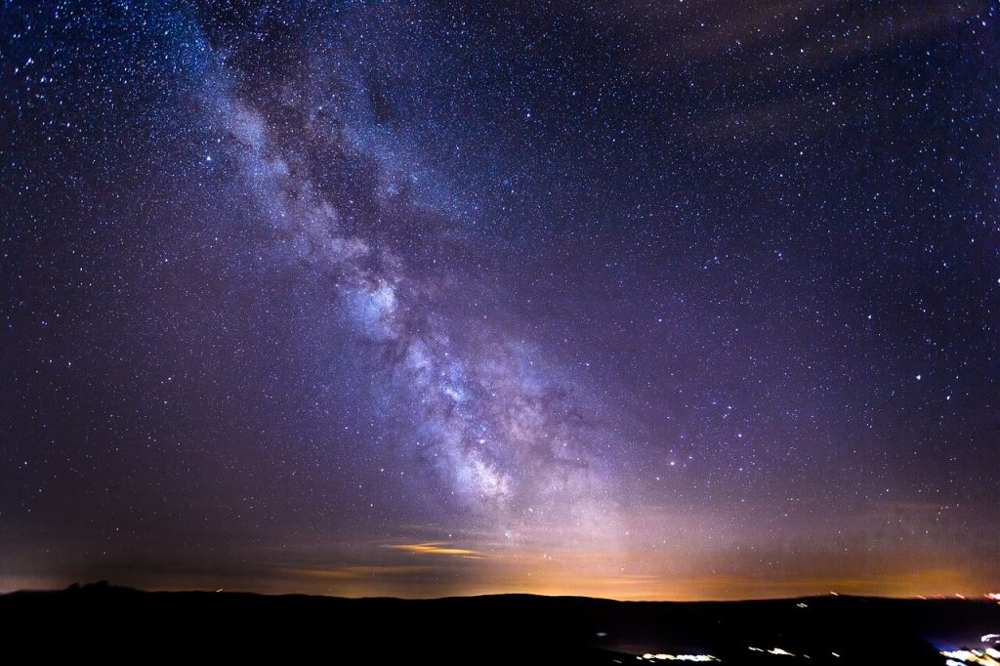
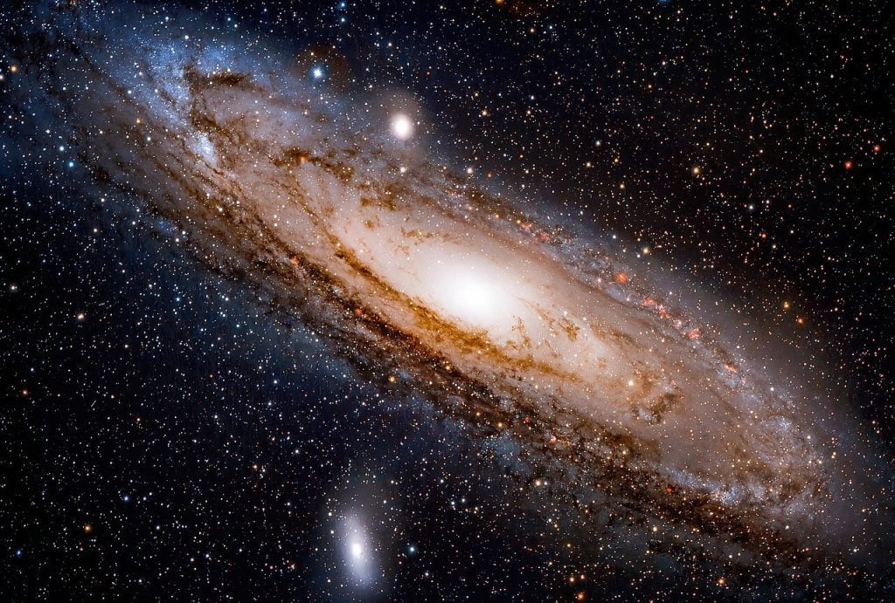

ဒီနေရာမှာ မေးခွန်းတစ်ခု မေးမိ ဖူးသလား။ ဒီ ကောင်းကင်မှာ မြင်နေရတဲ့ ကြယ်တွေ အားလုံးဟာ မစ်ကီးဝေး ဂလက်ဆီ ထဲက ကြယ်တွေ ချည်းပဲလား။ မစ်ကီးဝေး ဂလက်ဆီ အပြင်က ကြယ်တွေကိုရော သာမန် မျက်စေ့နဲ့ မြင်နိုင်သလား။
ကျွန်တော်တို့ ညဖက် မြင်ရတဲ့ ကြယ်တွေထဲက အချို့ဟာ မစ်ကီးဝေး အပြင်ဖက်က အခြား ဂလက်ဆီ တွေက ကြယ်တွေရော ဘယ်လောက် ပါနေသလဲ။
ဒီ မေးခွန်းရဲ့ အဖြေကတော့ ကျွန်တော်တို့ ညဖက် ကောင်းကင်မှာ သာမန် မျက်စေ့နဲ့ မြင်ရတဲ့ ကြယ်တွေ အားလုံးဟာ မစ်ကီးဝေး ဂလက်ဆီ ထဲက ကြယ်တွေပဲ ဖြစ်ကြပါတယ်။

ကမ္ဘာကနေ အလင်းနှစ် ၅,၀၀၀ ကျော်တဲ့ နေရာမှာ ရှိတဲ့ သန်း ထောင်ပေါင်းများစွာသော ကြယ်တွေဆီက အလင်းဟာ ကမ္ဘာကို ရောက်တဲ့ အချိန်မှာ အရမ်း အားနည်း မှေးမှိန် သွားပါပြီ။ ဒါ့ကြောင့် ဒီကြယ်တွေကို တစ်ခုချင်းစီ မမြင်နိုင် တော့ပါဘူး။
ဒီလို တစ်လုံးချင်းစီ မမြင်နိုင် တော့ပေမယ့် မစ်ကီးဝေးရဲ့ အလယ်ဗဟို ရပ်ဝန်းက ကြယ်တွေကတော့ အရမ်းကို အရေအတွက် များလွန်းတာမို့ သူတို့ရဲ့ အလင်းတွေကို မှိန်ပျပျ နောက်ခံ အနေနဲ့ တစ်စုတစ်စည်းထဲ မြင်ကြရ ပါတယ်။
ဒီ နောက်ခံ အလင်းဟာ ညဖက် လမိုက်ည ကောင်းကင်မှာ ဆိုရင် ဖြူလွလွ အငွေ့တန်း အနေနဲ့ မြင်ကြရ တာမို့ မြန်မာတွေက သူ့ကို “နဂါးငွေ့တန်း” လို့ အမည် ပေးထားပါတယ်။ အနောက်တိုင်းကတော့ နို့ရည် ဖိတ်ကျသလိုမို့ သူ့ကို “Milky Way” လို့ အမည် ပေးထားပါတယ်။

ကျွန်တော်တို့ရဲ့ ဂလက်ဆီဟာ ခရုပတ်ပုံ ချပ်ပြားကြီးမို့ ဒီ ဂလက်ဆီရဲ့ ဗဟိုချက် နေရာကိုလဲ ကမ္ဘာက ကြည့်ရင် ကောင်းကင်မှာ ရှည်ရှည် မျောမျော မြင်ကြရ ပါတယ်။ ကျွန်တော်တို့ နေ အဖွဲ့အစည်းက မစ်ကီးဝေးရဲ့ အစွန်လောက်မှာ ရှိတာမို့ ဒီ ချပ်ပြားကြီးရဲ့ ဖြတ်ပိုင်းပုံ မြင်ကြရတာပါ။
မစ်ကီးဝေးအပြင်ကကြယ်တွေကိုရောမြင်နိုင်မလား
တကယ်တော့ မစ်ကီးဝေး အပြင်က ကြယ်တွေကိုလဲ ကမ္ဘာကနေ မြင်နိုင်ပါတယ်။ ဒါပေမယ့် ကြယ်တစ်လုံး ချင်းစီ အနေနဲ့တော့ မြင်ရမှာ မဟုတ်ပါဘူး။ကမ္ဘာကနေ သာမန် မျက်စေ့နဲ့ဆို အင်ဒရိုမီဒါ (Andromeda Galaxy) ဂလက်ဆီကို မှိန်ပြပြလေး မြင်ကြရ ပါတယ်။ ဒီ ဂလက်ဆီကို အင်ဒရိုမီဒါ နက္ခတ် (constellation of Andromeda) အတွင်းမှာ မှိန်ပြပြ ရှည်မြောမြော အလင်းစက် ကလေးအဖြစ် မြင်ကြရမှာ ဖြစ်ပါတယ်။

အင်ဒရို မီဒါ ဂလက်ဆီ ထဲက ဘီလီယံ နဲ့ ချီတဲ့ ကြယ်တွေကို စုပြီး ဒီလို အလင်းတန်း သေးသေးလေး အဖြစ် မြင်ကြရတာ ဖြစ်ပါတယ်။
ကမ္ဘာကနေ သာမန် မျက်စေ့နဲ့ မြင်ရတဲ့ အရာဝတ္ထုတွေ ထဲမှာ အင်ဒရို မီဒါ ဂလက်ဆီ ဟာ အဝေးဆုံး ဖြစ်ပါတယ်။ ဒီ့ထက် ဝေးသွားတဲ့ ဂလက်ဆီ တွေကို ကမ္ဘာကနေ သာမန် မျက်စေ့နဲ့ မြင်ဖို့ မဖြစ်နိုင် တော့ပါဘူး။